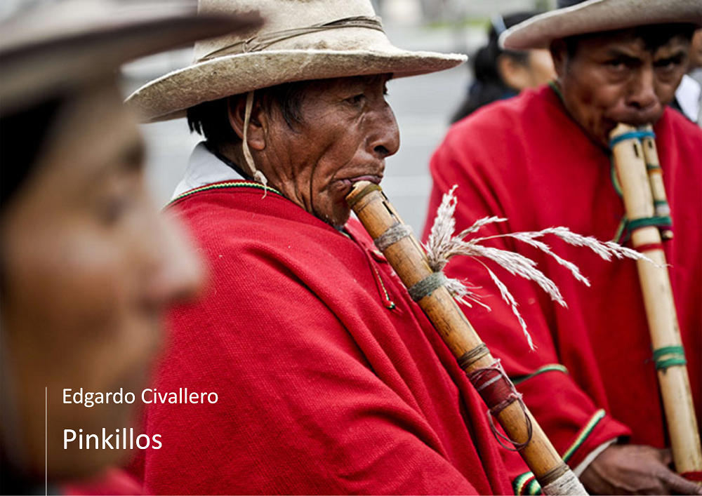

Pinkillos: An initial approach
Home > Digital books on music. Series 1 > Pinkillos: An initial approach
How to cite this work: Civallero, Edgardo (2025). Pinkillos: An initial approach. Archive edition. Bogota: El Zorro de Abajo Editora.
Archive edition, 2025 (El Zorro de Abajo Editora).
Download in PDF.
This book offers an exceptionally detailed overview of one of the most widespread and emblematic aerophones of the Andean world. It is an academic and ethno-organological work that combines precise technical descriptions with a historical, linguistic, and ritual reading of the instrument, showing its role as a living archive of Indigenous sonic memory.
The text defines pinkillos — also known as pinquillos, pinkullus, pingullos, pinkuyllus, among other variants — as vertical duct flutes with an internal channel and a single open tube, played from Ecuador to northern Chile and northwestern Argentina. These instruments are distinguished by the presence of a rigid internal air duct, a feature that sets them apart from quenas. The book examines the enormous morphological and terminological diversity of the genre, from construction materials such as cane, wood, metal, bone, clay, and plastic, to variations in the number and shape of finger holes, the type of edge, the position of the window, and fingering techniques. The taco, a key component of the mouthpiece, receives close analysis, since it determines the acoustic identity of each specimen.
The book refutes theories that attribute a European origin to pinkillos, arguing, on the basis of archaeological evidence, that aerophones with ducts already existed in pre-Hispanic America, from Teotihuacan to Tiwanaku. Colonial contact nevertheless influenced the morphology and repertoire of the instrument, generating local hybrids. The term is traced in early colonial sources: Bertonio’s Vocabulario of 1612, González Holguín’s of 1608, and Guamán Poma de Ayala’s Nueva corónica of 1615, which confirm the antiquity of the word pincullu and its general use to designate Andean duct flutes.
The text describes the temporal and cosmological logic that regulates their performance: pinkillos sound only during the rainy season — the jallu pacha or paray tiempu — when their sound "calls the water" and drives away frost. They are masculine instruments, associated with agricultural fertility and the cycles of life.
From there, the work is organized into two major narrative sections that detail regional organology. The large pinkillos, more than one meter long, include the pinkuyllus of Cusco and Puno, the lawata of Chinchero, the toro pinkillo and tokoros of Juliaca, and, above all, the mohoseños or moseños of the Bolivian altiplano, one of the most complex ensembles in the region. The book documents mohoseño troops with their different sizes — salliva, erazo, requinto, tiple — and explains the use of auxiliary blowing tubes (paltjata), which make it possible to blow into flutes up to two meters long. These ensembles produce approximate harmonies of fifths and fourths, dense with beatings, and are performed without bass drum accompaniment, instead being accompanied by cajas mohoseñadas.
The second part addresses the small pinkillos, less than 80 cm long, found throughout the mountain range. The text meticulously traces their geography: the three-holed Ecuadorian pingullos that accompany the tamboril in festivities such as Corpus Christi and the yumbada of Cotocollao; the one-handed Peruvian flutes — roncadoras, pincullos, chisqas, pifas, gaitas — played together with cajas; and altiplano versions such as the lawa k'umu of Puno and the pinkillos ch'alla, taraka, k'achuiri, wayro, and karhuani of La Paz. Each of these instruments is described through its vernacular names, dimensions, materials, modes of performance, and ritual contexts.
Particular attention is given to the alma pinkillo or muquni, a "bent" flute played during the Day of the Dead. Made from sokhosa cane, its central bend produces a distinctive sound considered appropriate for dialogue with the souls of the dead.
The work closes with observations on the spread of pinkillos into Chile — in the festivals of La Tirana and San Pedro de Atacama — and their near disappearance in northwestern Argentina.
Each flute, from the monumental sallivas to the tiny pingullos, embodies a specific relationship between body, landscape, and cosmos. They are instruments of knowledge, mediators between natural cycles and the communities that still make them resonate.